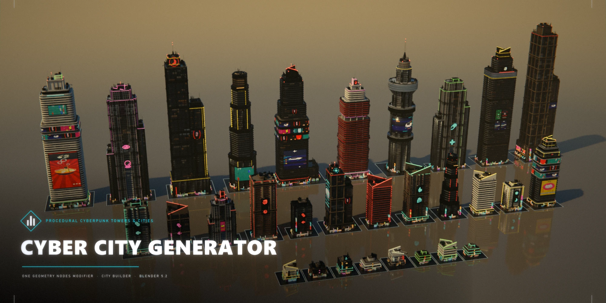
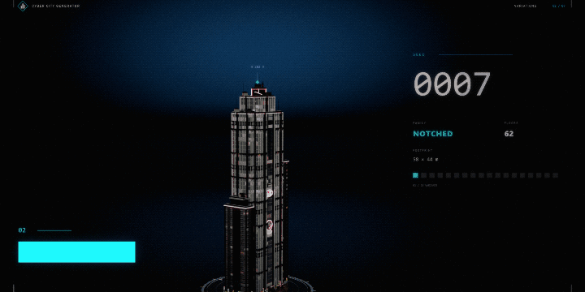
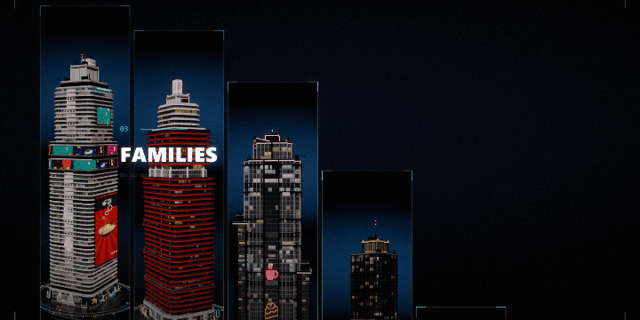
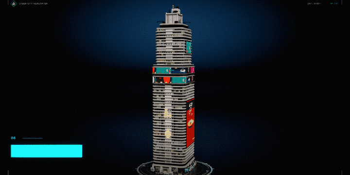
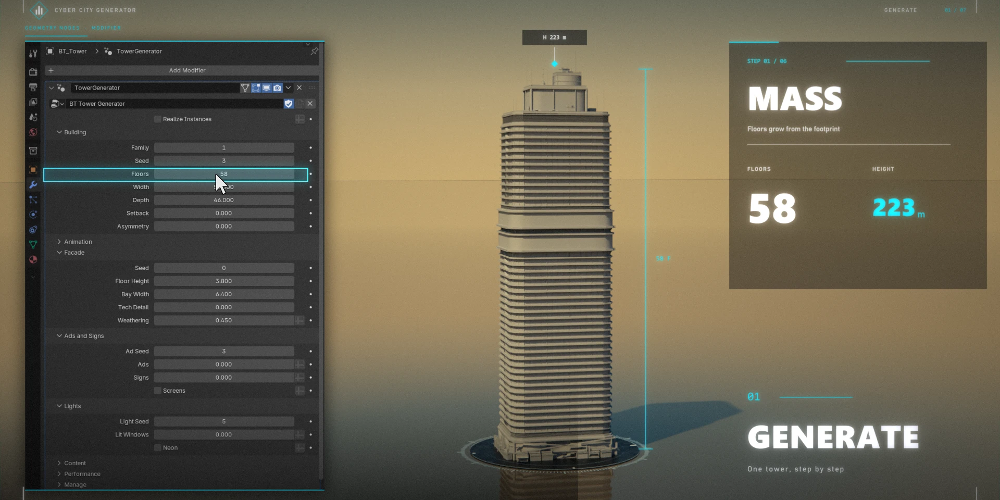
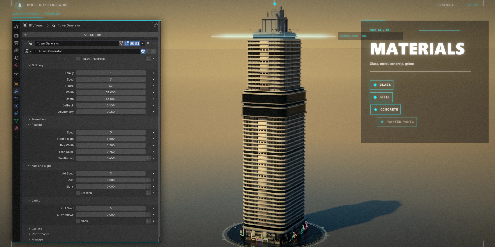
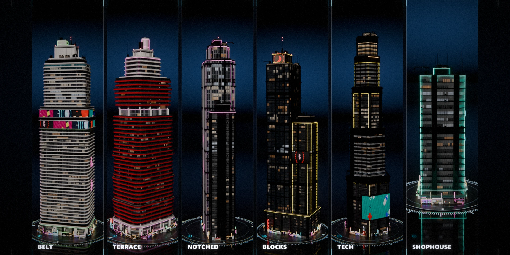
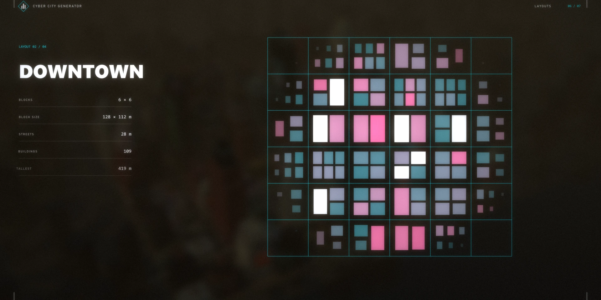
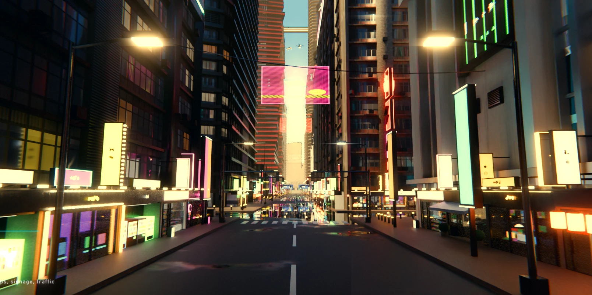
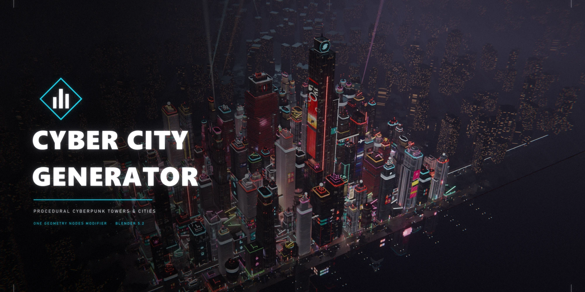

Cyber City Generator
Procedural cyberpunk skyscrapers and entire neon cities. Use one Geometry Nodes modifier per tower, or build a whole city with one command.
72 seconds, from one tower to a whole city
One modifier, one tower
Add the BT Tower Generator modifier to any mesh and a complete tower builds itself live. It includes the mass, setbacks and crown, facade bays and technical floors, glass, metal and concrete with grime, LED screens, neon pictogram signs, lit rooms, roof plant and street-level shops. Every input is a normal modifier field, so you can drag it, keyframe it or drive it.

Endless variations, fully deterministic
There are separate seeds for the mass, facade, ads and lights. Keep a silhouette you like and re-roll only its lights or its screens. The same inputs always give the same building.

Six building families

Harsh sun and haze, or neon after dark
Under a hazy afternoon sun the neon keeps burning. After dark the rooms light up floor by floor.

Whole cities with one command
The city builder places hundreds of towers on a street grid. Pick one of four layouts (grid, downtown, strip, megablock) or set your own blocks, block size and street width. It adds sidewalks, lamps, neon shop totems, sign gantries with pictogram direction signs, traffic lights, cables, an elevated rail, skybridges, a reflective bay, a lit far city and searchlights. Every building stays a live modifier.


blender -b --python build_city.py -- --layout downtown --seed 21 --save Downtown.blend
Rendered in Cycles








What you get
- CyberCityGenerator.blend: the generator with a demo tower in a night studio. The modifier is also an asset in Add Modifier > Cyber City, and the textures are embedded.
- CyberCity_Demo.blend: a prebuilt city of about 230 buildings, ready to render.
- City builder and full Python source (GPL-3.0).
- CC0 textures: ambientCG PBR sets and 13 animated pictogram ad loops.
- README: every input explained, with rendering tips.
Runs on
- Blender 5.2 or newer (tested on 5.2 LTS).
- Cycles (recommended) or Eevee.
- A full-city aerial at 1080p fits in an 8 GB GPU with the towers' LOD Distance at about 400 m.
- Signs use pictograms from the system symbol font, so there is no lettering anywhere.